可以存储可变数据的标识符——就是一个我们自己定义的名字。
php中，变量名和其对应（存储）的值之间的关系示意图：
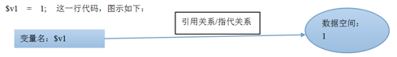
$变量名 = 值；
在需要一个数据值的场合，使用一个变量，就表示使用该变量的值（取得其值）。
echo $v1;
$v2 = $v1 + 2; //取得v1的值，并进行加法计算
f1($v1, 2, 3);
isset()判断一个变量“是否存在”，也包括如果变量中的“值”是null，会判断为“不存在”。
如果存在，就是true
如果不存在，就是false
empty()判断一个变量“是否是空的”：有多种情况都是“空的”:0, “”, “0”, false, null, array()
如果是空的，就是true
如果不是空的，就是false
值传递：
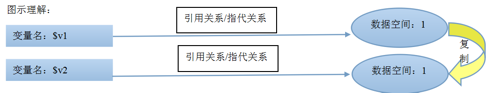
$v1 = 1;
$v2 = $v1; //v2为1；
$v2 = 10;
echo $v1; //1
unset($v1);
isset($v2); //???——true
引用传递：
$m1 = 1;
$m2 = &$m1; //引用传递，此时$m2也是1
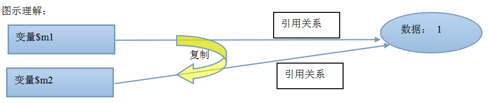
$m2 = 10;
echo $m1; //10
unset($m1);
echo $m1; //此行报错：变量m1不存在
isset($m2); //???——true;
isset($m1); //???——false
$s123 = 100;
$v1 = “s123”;
echo $$v1; //100;怎么理解：$v1是要输出的这个变量的“名字”，即为“s123”，那么结果就是要输出$s123;
$k1 = “k2”;
$k2 = “k3”;
$k3 = 3;
echo $$$k1
含义：代表网页客户端通过post方式所提交过来的数据！，是一个数组；
取得其中任何一项数据，其形式都是：$_POST[‘数据项名称’];
只有一种形式可以以post方式提交post数据：
<form action=”目标文件.php” method=”post”> ..... </form>
含义：代表网页客户端通过get方式所提交过来的数据！，也是一个数组；
取得其中任何一项数据，其形式都是：$_GET[‘数据项名称’];
有多种形式可以以gett方式提交get数据：
a: <form action=”目标文件.php” method=”get”> ..... </form>
b：<a href =”目标文件.php?a=1&b=xyz&cc=cctv” >文字</a>
说明：？号后面通常称为“名值对”
c：<script> location.href = ”目标文件.php?a=1&b=xyz&cc=cctv” ; </script>
d：<script> location.assign( ”目标文件.php?a=1&b=xyz&cc=cctv” ); </script>
e：<php header(“location:目标文件.php?a=1&b=xyz&cc=cctv”);
代表客户端在一次请求中提交过来的get数据和post数据的“合集”。
代表一些客户端在一次请求中的浏览器端信息和服务器端信息。
代表我们自定定义的“全局变量”的另一份存储形式：即所有全局变量，都又存储到这个预定义常量中去了。
$v1 = 1; //全局变量；则此时就有了: $GLOBALS[‘v1’]; 其值为1；
常量是相对于变量来说的：是一个其中存储的数据不会也不应该改变的“标识符”。
常量的使用，就2个方面：定义，取值。
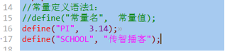
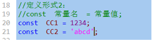
也有两种形式：直接使用名字，或通过constant()函数取得其值；
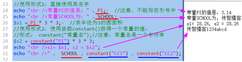
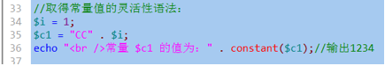
使用defined()函数：
如果存在：返回结果是true，
如果不存在：返回结果是false
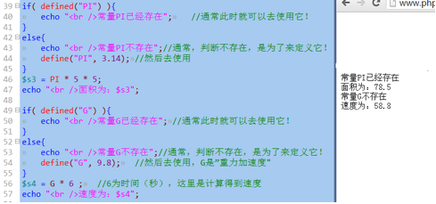
先看2个对比代码：
echo “v1的值为” . $v1; //注意，该变量v1未定义过
echo “C1的值为” . C1; //注意，该常量C1未定义过
注意：在php中，当使用一个未定义的常量的时候，系统会直接将该常量当做“有值”的常量去使用，并且其值就是该常量名——虽然也会报错！
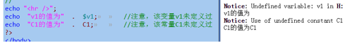
就是系统中预先定义好的一些常量，大约有几百个，我们只要知道几个就行：
M_PI: 就是圆周率的常量值；
PHP_OS: 就是php运行所在的操作系统
PHP_VERSION:就是php的版本号
PHP_INT_MAX: php中的最大的整数值
......更多可参考：php手册>附录>保留字列表>预定义常量
其实只是常量的形式，但没有常量的“恒常”的含义：其值其实会变化的，只有很少的几个：
__FILE__ :代表当前网页文件的完整物理路径
__DIR__ :代表当前网页文件所在的文件夹
__LINE__ :代表当前这个常量名所在的”行号”
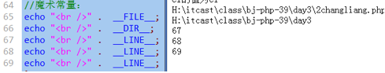
有8种数据类型：
整数类型： int， integer
浮点数类型： float，double， real
字符串类型： string
布尔类型： bool， boolean 这种类型，只有2个数据：ｔｒｕｅ，ｆａｌｓｅ
数组： array
对象： object
空类型： null 这种类型中，只有一个数据，那就是null
资源类型： resource
$n1 = 123; //10进制数字写法
$n2 = 0123; //8进制数字写法，实际n2中存储的数字比123小
$n3 = 0x123; //16进制数字写法，实际n3中存储的数字比123大
$n4 = 0b1010; //2进制数字写法(目前不学）
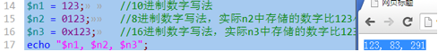
首先记住这几个单词：
bin：2进制
oct：8进制
dec：10进制
hex：16进制
进制转换主要分2种情况：
1，10进制转换为其他3种进制：decbin(), decoct(), dechex();
2，其他3种进制，转换为10进制：
进制转换主要分2种情况：
1，10进制转换为其他3中进制：
decbin(一个10进制数字)： 结果返回的是该数字的2进制数字形式的字符串！！！
decoct(一个10进制数字)： 结果返回的是该数字的8进制数字形式的字符串！！！
dechex(一个10进制数字)： 结果返回的是该数字的16进制数字形式的字符串！！！
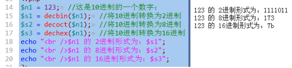
2，其他3种进制，转换为10进制：
bindec(一个2进制数字字符串)： 结果返回的是该2进制数字字符串对应的10进制数字！！！
octdec(一个8进制数字字符串)： 结果返回的是该8进制数字字符串对应的10进制数字！！！
hexdec(一个16进制数字字符串)： 结果返回的是该16进制数字字符串对应的10进制数字！！！
对于输入的字符串中的字符，如果不是对应进制的数字，会被忽略。
那么，有没有这个转换呢？hexbin()???? ——没有！
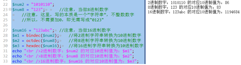
一个思考题：
将8进制字符串”12345”，转换为2进制结果，怎么做？
$v1 = octdec(“12345”); //此时，v1是10进制数字
$result = decbin( $v1 ); //此时，就是结果：为2进制数字字符串！
补充进制基础知识：
|
10进制 |
1 |
2 |
3 |
4 |
5 |
6 |
7 |
8 |
9 |
10 |
11 |
12 |
13 |
14 |
15 |
16 |
17 |
|
8进制 |
1 |
2 |
3 |
4 |
5 |
6 |
7 |
10 |
11 |
12 |
13 |
14 |
15 |
16 |
17 |
20 |
21 |
|
16进制 |
1 |
2 |
3 |
4 |
5 |
6 |
7 |
8 |
9 |
A |
B |
C |
D |
E |
F |
10 |
11 |
|
2进制 |
1 |
10 |
11 |
100 |
101 |
110 |
111 |
1000 |
1001 |
1010 |
1011 |
1100 |
1101 |
1110 |
1111 |
10000 |
10001 |
|
20 |
21 |
|
22 |
|
|
|
23 |
|
|
|
|
|
|
|
24 |
|
|
|
1 |
2 |
|
4 |
|
|
|
8 |
|
|
|
|
|
|
|
16 |
|
一个课后题：
$v1 = 0x123; //它的实际大小其实是：291
$result = octdec( $v1 ); //结果为：17，怎么理解？推理如下：
1，octdec( $v1 )
2，octdec(291) //因为$v1的实际值就是291
3，octdec(“291”); //因为octdec()函数要求输入一个字符串，这属于自动转换
4，octdec(“21”); //因为octdec()函数要求输入一个8进制数字字符串，而9不是合法的数字，忽略掉
5，结果，8进制数字”21”转换为10进制就是就是17；
10进制转换为2进制：
做法：除2取余倒着写出所有余数，就是对应的2进制数字形式；
详细解释：将一个10进制数字除以2，得到商和余数，如果商还大于等于2，则继续除以2，继续得到商和余数，以此类推，直到商为0为止，然后将前面的所有余数按倒序写出来就是对应的2进制数字。
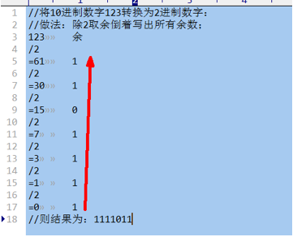
10进制转换为8进制：
做法：除8取余倒着写出所有余数，就是对应的8进制数字形式；
详细解释：将一个10进制数字除以8，得到商和余数，如果商还大于等于8，则继续除以8，继续得到商和余数，以此类推，直到商为0为止，然后将前面的所有余数按倒序写出来就是对应的8进制数字。
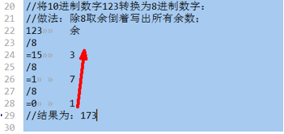
10进制转换为16进制：
做法：除16取余倒着写出所有余数，就是对应的16进制数字形式；
详细解释：将一个10进制数字除以16，得到商和余数，如果商还大于等于16，则继续除以16，继续得到商和余数，以此类推，直到商为0为止，然后将前面的所有余数按倒序写出来就是对应的16进制数字。
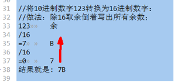
其他进制转换为10进制的做法：
先看一种对数字大小和“数字权值”的理解：
对一个10进制数字： 1234，可以这样去理解它的大小：
1234 = 1*103 + 2*102 + 3*101 + 4*100 = 1000 + 200 + 30 + 4; (任何数的0次方都是1）
这里，我们对103 , 102, 101, 100 等等，称为“权值”；每个位的权值是不同的。
对于10进制，每个位上的权值，就是10 的 n次方；
对于8进制，每个位上的权值，就是8的 n次方；
对于16进制，每个位上的权值，就是16 的 n次方；
对于2进制，每个位上的权值，就是2 的 n次方；
8进制转换10进制：
将8进制数字的每个位上的数字乘以其对应位上的权值，然后相加之后的结果。
举例：有一个8进制数字123，则其实际大小为：
1 * 82 + 2 * 81 + 3 * 80 = 64 + 16 + 3 = 83;
16进制转换10进制：
将16进制数字的每个位上的数字乘以其对应位上的权值，然后相加之后的结果。
举例：有一个16进制数字123，则其实际大小为：
1 * 162 + 2 * 161 + 3 * 160 = 256 + 32 + 3 = 291;
2进制转换10进制：
将2进制数字的每个位上的数字乘以其对应位上的权值，然后相加之后的结果。
举例：有一个2进制数字101011，则其实际大小为：
1 * 25 + 0 * 24 + 1 * 23 + 0 * 22 + 1 * 21 + 1 * 20= 32 + 0 + 8 + 0 + 2 + 1 = 43;
1， 常规写法：带小数点。
$v1 = 123.456;
2， 科学计数法：带一个特殊符号“E”
$v1 = 123.456E2; //含义为：123.456乘以10的2次方；
$v2 = 123.456E3; //含义为：123.456乘以10的3次方，虽然结果是123456，但仍然是“浮点型”
$v3 = 123E4; //含义为：123乘以10的4次方，还是浮点数。
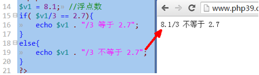
因为：
1，所有数字，最终的表示形式，都是2进制！！！
2，大多数浮点数的2进制形式，不能完全表达准确，最终只能“以很高的精度接近理论值”
3，因此，浮点数比较是不可靠。
再从另一个角度证明浮点数的不准确性：
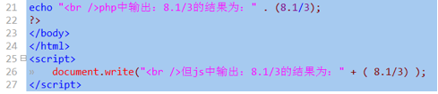
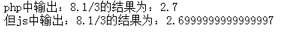
说明： php中输出其实是做了一定的处理之后的显示结果，而js的输出是该计算结果的“真实反映”。
那应该怎么办？
考虑实际应用所需的精度的情况下，去将要比较的浮点数，转换为整数之后再比较。
比如：
要求精度为3为小数，则都乘以1000，然后取整后比较；
要求精度为4为小数，则都乘以10000，然后取整后比较；
....
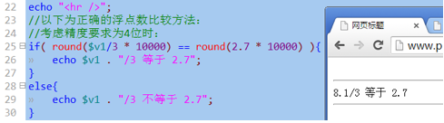
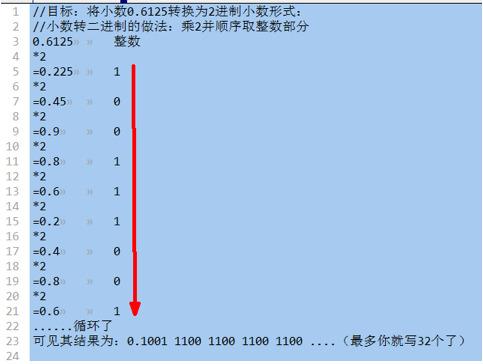
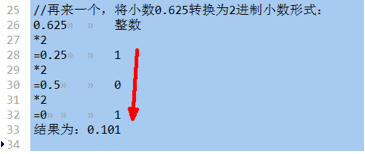
获取一个数据（变量）的类型的函数有：
getType($变量); 返回的是该类型的名字（字符串）；
var_dump($变量): 会输出该变量的类型，数据内容，（以及长度)；
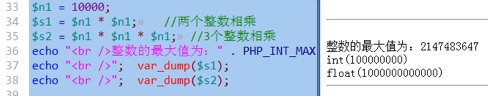
形式1：双引号字符串：
$str1 = “字符串内容.....”;
形式2：单引号字符串：
$str2 = ‘字符串内容.....’;
形式3：双引号定界符字符串：
$str3 = <<<”标识符A”
字符串内容....
标识符A;
形式4：单引号定界符字符串：
$str4 = <<<’标识符B’
字符串内容...
标识符B;
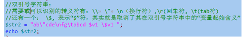
输出内容为：
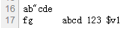
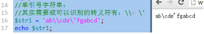
说明：
实际上，单引号字符串中，只有最后一个“\”才是必须进行转义的。
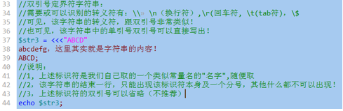
结果为：
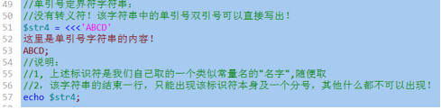
结果为：
单词是bool，boolean。
其只有2个数据：true，false；
布尔类型的一个常见应用情形是：对一个变量直接进行判断，比如if判断，示例如下：
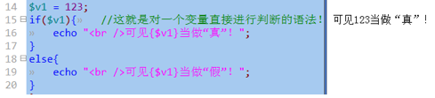
这里的判断，永远是指：判断该变量（数据）“是否为真”。
对于这种情况，只有如下数据是被当做“假”（false）：
0, 0.0, “”, “0”, null, array(), false, 还有一个是“未定义的变量”
其余都是真。
参考：
手册》附录》PHP类型比较表》
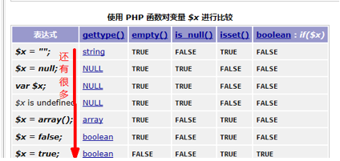
在任何运算中，如果需要某种类型的数据，而给出的数据不是该类型，通常都会发生自动转换：将该类型转换为目标需要的类型。
比如： octdec($x), bindec($x), hexdec($x); //这里就要求$x必须是字符串，如果不是，就会转换；
$v1 = 1 + “2”; //此时也发生了自动转换。
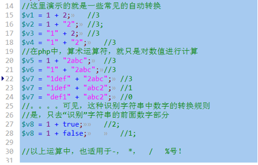
自动类型转换是由“运算符”或类似运算符的语句来决定的。
而：
强制类型转换，仅仅是一个简单的语法：
形式：（目标类型)数据；
含义： 将该数据转换为设定的目标类型；
例子：
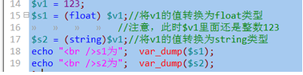
通常的转换目标类型有：
(int), (float), (string), (bool), (array), (object)
上述强制类型转换，并不改变该变量的本身数据或类型。
对应，有一个语法是直接改变改变本的数据（及类型）：
settype( $变量名, “目标类型”);
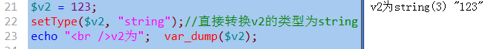